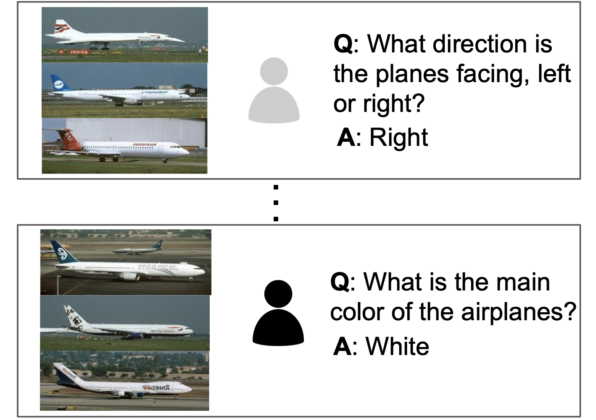
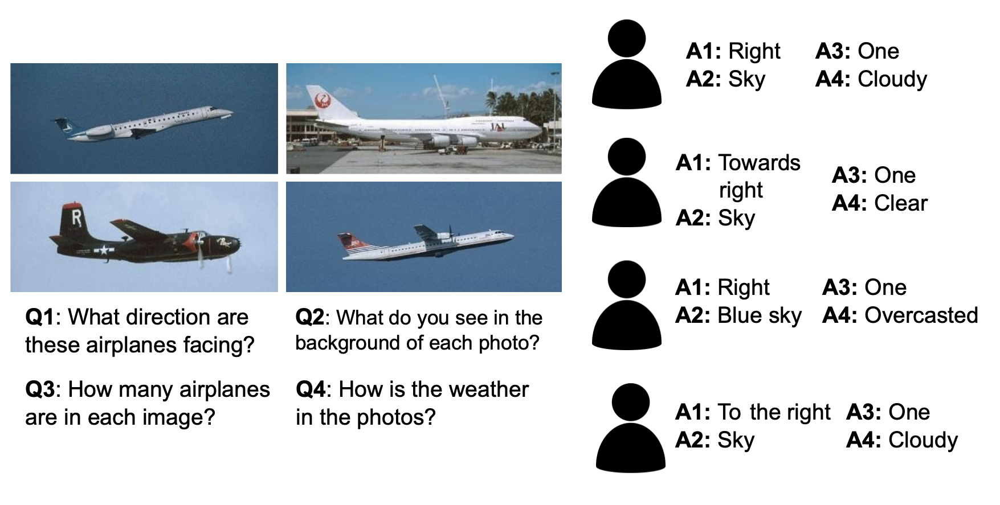
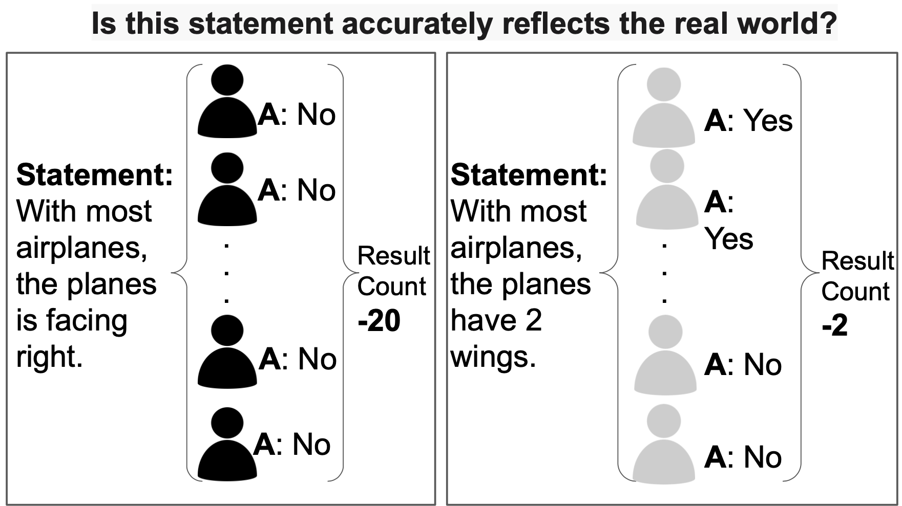

Crowdsourcing Game
This is our crowdsourcing game! Please feel free to contribute to our project to find more meaningful bias.
Learn more(current)

|
| This is our crowdsourcing game! Please feel free to contribute to our project to find more meaningful bias.
Learn more(current)
|
|  Question Generation |  Feature Justification |  Bias Statement Decision |
| Asks crowdsource workers in question-answer pair and the question is used to characterize the attribute on which workers find similarity | Input is the questions generated from previous step. The workers will be presented with images and question that corresponds to it and answer the question in short answer | Takes the responses from previous step as input and outputs sorted list of biases detected by the workers. |
{% endblock%}